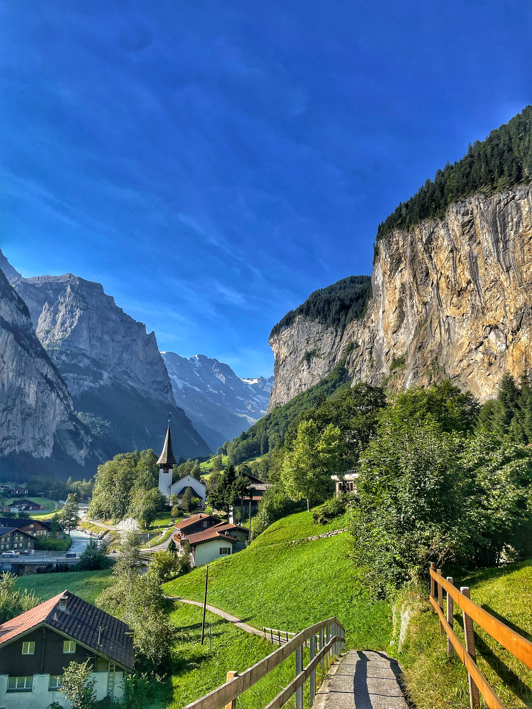
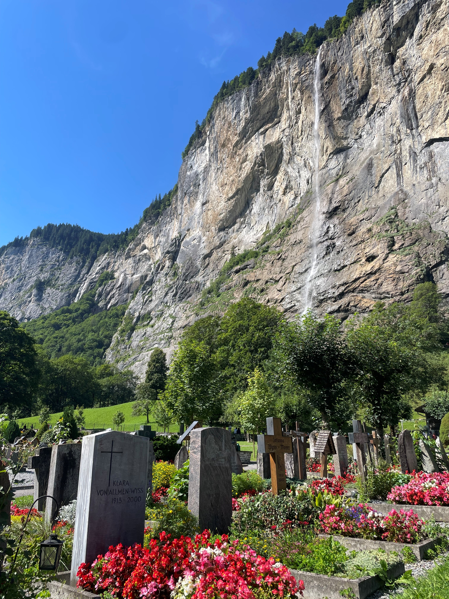

Valley of Waterfalls
LAUTERBRUNNEN · SWITZERLAND
Escondido en el corazón de los Alpes berneses, Lauterbrunnen es uno de esos lugares que parecen demasiado hermosos para ser reales. Imponentes paredes de roca se elevan cientos de metros sobre el fondo del valle, cascadas que nacen en alturas invisibles se precipitan hacia el vacío y los tradicionales chalets suizos descansan entre prados verdes, enmarcados por algunas de las montañas más emblemáticas de Europa.
Considerado uno de los valles más bellos de Suiza, Lauterbrunnen se siente menos como un destino turístico y más como un escenario sacado de un cuento. Cada rincón descubre un nuevo mirador, una nueva cascada o un paisaje de postal que parece haber permanecido intacto durante siglos.
Pero más allá de su extraordinaria belleza se esconde una fascinante historia geológica. Modelado por los glaciares a lo largo de miles de años y rodeado de cumbres legendarias, Lauterbrunnen sigue siendo uno de los valles alpinos más espectaculares de toda Europa.

Uno de los valles más bellos de Suiza
Situado en el corazón del Oberland bernés, Lauterbrunnen se extiende entre gigantescas paredes verticales que se alzan de forma espectacular desde el fondo del valle. La combinación de inmensos acantilados, praderas alpinas y un sinfín de cascadas crea un paisaje único en Suiza.
{kind=link}

Viajeros de todo el mundo llegan hasta aquí para disfrutar de sus paisajes, ya sea recorriendo sus famosos senderos, explorando los pueblos de montaña cercanos o simplemente contemplando las vistas desde el fondo del valle.
A pesar de su fama internacional, Lauterbrunnen conserva una atmósfera de tranquilidad que le otorga un carácter auténtico y difícil de encontrar.
El valle de las 72 cascadas
Lauterbrunnen es conocido como el Valle de las 72 Cascadas, un nombre que resume a la perfección la esencia de este lugar. El agua parece brotar de todas partes, precipitándose por paredes verticales antes de desaparecer entre los bosques y praderas del valle.
La más famosa de todas es Staubbach, que cae cerca de 300 metros desde los acantilados que dominan el pueblo. Durante la primavera y el verano, el deshielo alimenta su caudal, transformándola en una impresionante columna de agua y niebla visible desde varios kilómetros de distancia.
Permanecer al pie de la cascada basta para comprender por qué este valle ha inspirado a artistas, escritores y viajeros durante generaciones.
Un valle esculpido por el hielo
La espectacular forma de Lauterbrunnen es el resultado de los enormes glaciares que ocuparon esta región durante las sucesivas glaciaciones. A lo largo de miles de años, aquellos inmensos ríos de hielo excavaron el característico valle en forma de U que hoy define el paisaje.
{kind=link}

Los acantilados casi verticales que rodean el valle constituyen uno de los mejores ejemplos de erosión glaciar de todos los Alpes. Combinados con las cascadas que descienden desde la meseta superior, crean uno de los escenarios naturales más impresionantes de Europa.
Pocos lugares muestran con tanta claridad la inmensa fuerza de los procesos geológicos como Lauterbrunnen.
Bajo los gigantes de los Alpes
Más allá del valle se alzan tres de las montañas más famosas de Suiza: el Eiger, el Mönch y la Jungfrau.
Estas cumbres legendarias dominan el horizonte de los Alpes berneses y, desde hace más de un siglo, atraen a montañeros, aventureros y fotógrafos de todo el mundo. Sus picos cubiertos de nieve ofrecen un telón de fondo espectacular visible desde numerosos puntos del valle.
Juntas forman uno de los paisajes alpinos más emblemáticos de toda Europa.
Un lugar que inspiró leyendas
La belleza de Lauterbrunnen ha cautivado a innumerables viajeros. Entre ellos se encontraba el escritor J.R.R. Tolkien, que recorrió los Alpes suizos a comienzos del siglo XX.
Muchos aficionados creen que los imponentes acantilados, las cascadas y la atmósfera alpina del valle sirvieron de inspiración para Rivendel, el legendario refugio élfico de El Señor de los Anillos.
Sea o no cierta esta influencia, resulta fácil entender por qué la comparación ha perdurado con el paso del tiempo.
La vida entre montañas y cascadas
Aunque el paisaje que lo rodea acapara toda la atención, Lauterbrunnen es también un encantador pueblo alpino que refleja las tradiciones de las regiones montañosas de Suiza.
Chalets de madera, balcones repletos de flores y tranquilas carreteras rurales crean una atmósfera atemporal. Trenes, teleféricos y senderos de montaña conectan el valle con localidades vecinas como Wengen y Mürren, ofreciendo infinitas posibilidades para seguir explorando.
El resultado es un destino que consigue sentirse salvaje y acogedor al mismo tiempo.
El valle de las cascadas
Existen muchos lugares extraordinarios en los Alpes, pero pocos poseen la personalidad de Lauterbrunnen.
Las cascadas. Los inmensos acantilados. Los glaciares que asoman en la distancia. Las grandes cumbres vigilando silenciosamente el valle.
Juntos forman un paisaje que parece casi legendario, como si la naturaleza hubiera reunido aquí sus mejores obras en un solo escenario.
Para los senderistas es un paraíso de aventuras. Para los fotógrafos, una fuente inagotable de inspiración. Y para cualquiera que tenga la fortuna de recorrerlo, un recuerdo que permanece mucho tiempo después de terminar el viaje.
Entre los innumerables tesoros de Suiza, Lauterbrunnen continúa ocupando un lugar privilegiado.
Historias relacionadas
Continúa descubriendo algunos de los paisajes de montaña más espectaculares de Europa en El Valle Perdido, un viaje fotográfico por el impresionante Valle de Ordesa, en los Pirineos españoles.
Notas fotográficas
Ubicación: Lauterbrunnen, Oberland Bernés, Suiza
Cordillera: Alpes
Cascada más famosa: Staubbach
Cumbres cercanas: Eiger, Mönch y Jungfrau
Categoría: Fotografía de paisaje
Tema: Valles alpinos y cascadas
Fotógrafo: Carles Torres